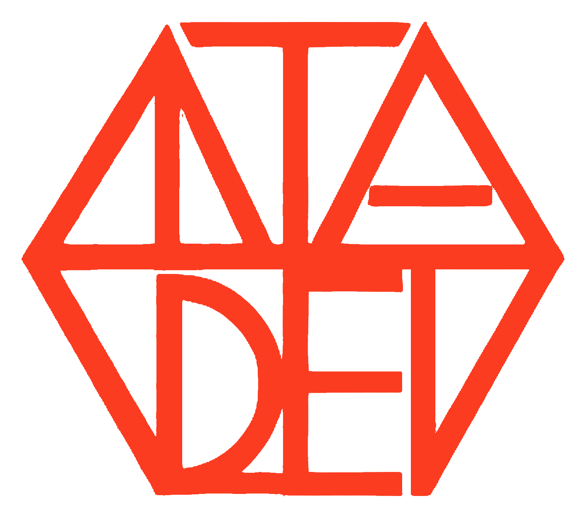

1937'den bu yana Alman üniversitelerinde yetişen üç kuşağın bilgisini, deneyimini ve bağlantılarını Türkiye'nin gelişimi için bir araya getiriyoruz.
Kısaca TADEV olarak anılan Türk-Alman Dayanışma ve Eğitim Vakfı, yaklaşık bir yıllık hazırlığın ardından 15 Mart 1993'te 51 kurucu mütevelli ve 131 kurucu katılımcı tarafından resmen kuruldu.
Vakıf; Almanya ile bağlantılı yüksek öğrenim, uzmanlık, araştırma ve iş geçmişine sahip kişilerin birikimini, Türkiye'nin gelişimi ve daha güçlü Türk-Alman ilişkileri için ortak bir değere dönüştürmeyi amaçlar.
Almanya'da öğrenimini sürdüren her öğrenci ve akademisyen, potansiyel bir TADEV mütevellisidir.
Eğitim, toplumların ve ülkelerin gelişimi için temel ihtiyaçtır — ve TADEV'in birinci öncelikli faaliyet alanıdır.
Başarılı öğrencilere karşılıksız burs; Türk-Alman üniversite ve bilim kurumları arasında iş birliği.
Mütevelli akademisyenler aracılığıyla araştırma ve bilim kurumları arasında bağ.
Türkiye ve Almanya arasında ikili ticari ilişkileri destekleyen çalışmalar.
Mütevelliler arasında dayanışma, yakınlaşma ve iş birliği fırsatları.
Topluluk bağını güçlendiren etkinlikler ve sanat yoluyla Türkiye'yi tanıtan çalışmalar.
Tüm kurucu mütevellilerden oluşur; her yıl Şubat'ta toplanır.
İki yılda bir seçilen yürütme organı.
Mali ve idari işleyişi denetleyen bağımsız organ.
Amaç ve faaliyetlere yönelik araştırma yapar.
1995'ten beri Burs Yönetmeliği kapsamında başarılı öğrencilere karşılıksız burs.
FES ve AHK ile "Enerji Sisteminde Küresel Dönüşüm ve Türkiye" semineri.
İki ülke arasındaki ticari ilişkileri ve ekonomik iş birliğini güçlendirme.
Türkiye'de Almanca eğitim veren bir üniversitenin kurulmasına destek.
Birikiminizi, bağlantılarınızı ve deneyiminizi Türkiye'nin gelişimi ve Türk-Alman dostluğu için paylaşın.